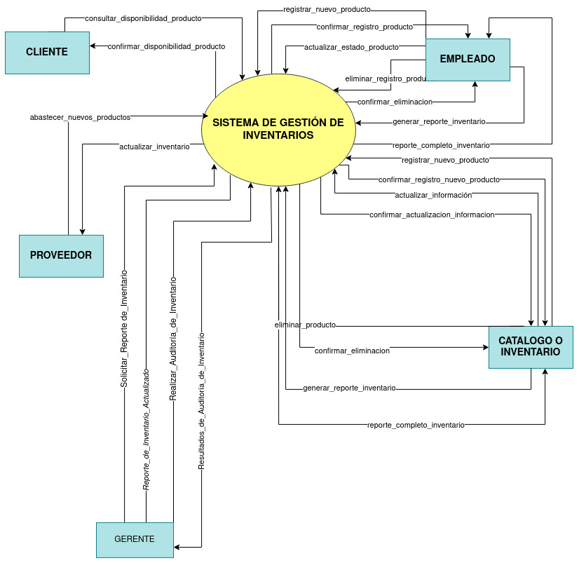

MODELO AMBIENTAL
a) DECLARACIÓN DE PROPÓSITOS:
Desarrollar un modelo ambiental para un sistema de gestión de inventarios que permita gestionar la entrada y salida de productos, así como el estado y la disponibilidad de los mismos.
b) LISTA DE ACONTECIMIENTOS:
- • Registrar nuevo producto en el inventario.
- • Actualizar información de un producto.
- • Eliminar producto del inventario.
- • Consultar información de productos.
- • Generar reporte de inventario.
- • Abastecer productos a través de proveedores.
- • Realizar auditoría de inventario.
c) DIAGRAMA DE CONTEXTO:
